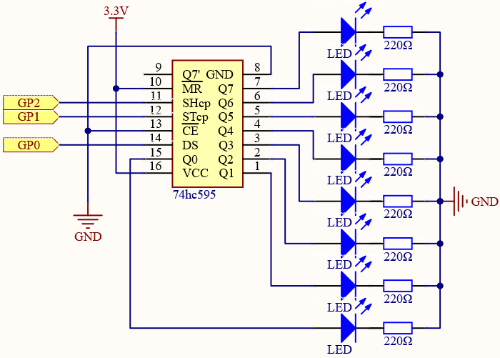

Note
Hello, welcome to the SunFounder Raspberry Pi & Arduino & ESP32 Enthusiasts Community on Facebook! Dive deeper into Raspberry Pi, Arduino, and ESP32 with fellow enthusiasts.
Why Join?
Expert Support: Solve post-sale issues and technical challenges with help from our community and team.
Learn & Share: Exchange tips and tutorials to enhance your skills.
Exclusive Previews: Get early access to new product announcements and sneak peeks.
Special Discounts: Enjoy exclusive discounts on our newest products.
Festive Promotions and Giveaways: Take part in giveaways and holiday promotions.
üëâ Ready to explore and create with us? Click [here] and join today!
5.1 - Microchip - 74HC595¶
Integrated circuit (integrated circuit) is a kind of miniature electronic device or component, which is represented by the letter “IC” in the circuit.
A certain process is used to interconnect the transistors, resistors, capacitors, inductors and other components and wiring required in a circuit, fabricate on a small or several small semiconductor wafers or dielectric substrates, and then package them in a package , it has become a micro-structure with the required circuit functions; all of the components have been structured as a whole, making electronic components a big step towards micro-miniaturization, low power consumption, intelligence and high reliability.
The inventors of integrated circuits are Jack Kilby (integrated circuits based on germanium (Ge)) and Robert Norton Noyce (integrated circuits based on silicon (Si)).
This kit is equipped with an IC, 74HC595, which can greatly save the use of GPIO pins. Specifically, it can replace 8 pins for digital signal output by writing an 8-bit binary number.
Schematic

When MR (pin10) is high level and OE (pin13) is low level, data is input in the rising edge of SHcp and goes to the memory register through the rising edge of SHcp.
If the two clocks are connected together, the shift register is always one pulse earlier than the memory register.
There is a serial shift input pin (Ds), a serial output pin (Q) and an asynchronous reset button (low level) in the memory register.
The memory register outputs a Bus with a parallel 8-bit and in three states.
When OE is enabled (low level), the data in memory register is output to the bus(Q0 ~ Q7).
Wiring
{kind=link}
Code
Note
You can open the file
5.1_microchip_74hc595.inounder the path ofeuler-kit/arduino/5.1_microchip_74hc595.Or copy this code into Arduino IDE.
Then select the Raspberry Pi Pico board and the correct port before clicking the Upload button.
When the program is running, you can see the LEDs turning on one after another.
How it works?
Declare an array, store several 8 bit binary numbers that are used to change the working state of the eight LEDs controlled by 74HC595.
int datArray[] = {0b00000000, 0b00000001, 0b00000011, 0b00000111, 0b00001111, 0b00011111, 0b00111111, 0b01111111, 0b11111111};
Set STcp to low level first and then high level. It will generate a rising edge pulse of STcp.
digitalWrite(STcp,LOW);
shiftOut() is used to shift out a byte of data one bit at a time, which means to shift a byte of data in datArray[num] to the shifting register with the DS pin. MSBFIRST means to move from high bits.
shiftOut(DS,SHcp,MSBFIRST,datArray[num]);
After digitalWrite(STcp,HIGH) is run, the STcp will be at the rising edge. At this time, the data in the shift register will be moved to the memory register.
digitalWrite(STcp,HIGH);
A byte of data will be transferred into the memory register after 8 times. Then the data of memory register are output to the bus (Q0-Q7). For example, shiftout B00000001 will light up the LED controlled by Q0 and turn off the LED controlled by Q1~Q7.